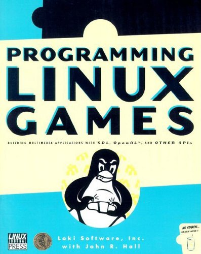
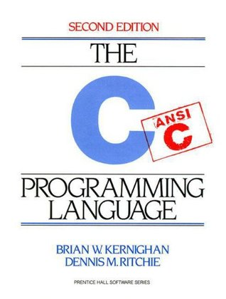
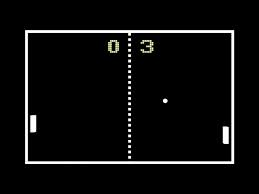
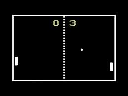

BIENVENUE
PUF-HCM Classe: LINF13 Professeur: Olivier Ly Projet AP1 Ping Pong I. Les membres participés _ NGUYEN Thanh Son Lam _ TRUONG Ba Loc _ MAI Trung Hieu II. Le contenu 1. Nom du projet: Le jeu Ping Pong, écrit en langage C++ 2. Présentation générale: Deux joueurs, face à face, contrôlent deux gallets et une balle. Le but de ce jeu est d'éviter la balle à se déplacer en dehors de la table. Le premier à laisser la balle hors de la table est vaincu. III. Notre Plan détaillé 1. Délai: 15/12/2013 2. Les étapes principales _ Le mois d'Octobre et de Novembre: + Préparer les documents nécessaires (la bibliothèque SDL) + Construire la règle, les caractéristiques rendant le jeu amusant et intéressant. + Réfléchir aux algorithmes pour écrire ce jeu. _ Le mois de Decembre: + Commencer à écrire les codes. + Vérifier les fautes et terminer le travail. IV. La règle du jeu Nous proposons ici 3 niveaux de difficulté (EASY, NORMAL, CRAZY), correspondant au nombre de balle de 1 à 3. Après chaque 10 secondes, la vitesse de la balle augmente. Chaque joueur aura 3 tours à jouer. Le premier à laisser tous ses 3 balles hors de la table est vaincu. Pour être équitable, la balle se déplace aléatoirement et n'apparait qu'au centre de la table. Quant au niveau NORMAL et CRAZY, un écart de temps de 2 secondes est nécessaire pour que les balles n'apparaissent pas en même temps. V. Développement possible _ Créer les effets sonores pour rendre le jeu intéressant _ Laisser les joueurs à modifier les paramètres selon leur gout pour augmenter la difficulté du jeu. VI. Compilation et Exécution du jeu _ Le jeu fonctionne sous linux donc, il faut avoir le bibliothèque SDL. (à installer par la commande: apt-get install libsdl1.2-dev libsdl1.2debian ) _ Compilez par cette commande: (exemple) g++ -o game pingpong.cpp -lSDL _ Executez : ./game VII. Références 1. “Programming Linux Games” - Loki Software de John R. Hall 2. Brian Kernighan, Dennis Ritchie - The C Programming Language (2nd Edition) 3. Site: http://lazyfoo.net/
#include < iostream>
#include < cstdlib>
#include < SDL/SDL.h>
#include < string>
using namespace std;
/***********************************************************************************/
const int SCREEN_WIDTH = 1100;
const int SCREEN_HEIGHT = 650;
const int SCREEN_BPP = 24;
const int LIM_UP = 55; //la limite en haut
const int LIM_DOWN = 590; //la limite en bas
const int LIM_LEFT = 75; //la limite a gauche
const int LIM_RIGHT = 1025; //la limite a droite
const int GALLET_HEIGHT = 135;
const int GALLET_WIDTH = 35;
const int BALL_HEIGHT = 45;
const int BALL_WIDTH = 45;
const int BALL_SPEED = 5;
const int GALLET_SPEED = 16;
const int BALL_PLAY = 3;
const int SIZE_BUTTON_H = 75;
const int SIZE_BUTTON_W = 75;
const int SIZE_LEVEL_H = 125; //la taille de la touche LEVEL
const int SIZE_LEVEL_W = 125;
const int NBR_BUTTON = 4; //le nombre de touches de la page INTRO: level, help, play, quit
const int NBR_LEVEL = 3; // 3 niveau de difficulte: easy, nomal, et crazy
const int DIFFICULT=0;
/***********************************************************************************/
SDL_Surface *screen=NULL;
SDL_Surface *background=NULL;
SDL_Surface *gallet1_img=NULL;
SDL_Surface *gallet2_img=NULL;
SDL_Surface *image2=NULL;
SDL_Surface *button_img=NULL;
SDL_Surface *winner_img=NULL;
SDL_Rect button[NBR_BUTTON], level[NBR_LEVEL];
SDL_Rect button_press[NBR_BUTTON], level_press[NBR_LEVEL];
SDL_Event event;
//TTF_Font *font = NULL;
typedef struct movement_image
{
int x, y;
int dx, dy;
} the_ball, gallet;
static the_ball ball[NBR_LEVEL], ball_screen[BALL_PLAY]; //la balle selon le niveau et le nombre de tour
static the_ball ball_score1[BALL_PLAY], ball_score2[BALL_PLAY]; //le nombre des balles affichee au lieu d'afficher le point des joueurs
static gallet gallet1, gallet2;
/***********************************************************************************/
/***********************************************************************************/
//Etablir les valeurs initiales des balles et des gallets
void value_begin();
bool check_SDL(); //fonction de verifier SDL
void cleaning(); //fonction d'effacer SDL et les images
void control_gallet1(); //fonction de controle du joueur 1
void control_gallet2(); //fonction de controle du joueur 2
/***********************************************************************************/
void ball_movement (int & count,
int & ball_left,
int & pl1_score,
int & pl2_score,
int level_chose,
int & timer_start); //identifier le nombre de balles correspondant au temps, va cham voi tuong va gallet
void ball_speed_inc (int & faster_time, int level_chose); //la vitesse de la balle accelerant apres chaque 10 secondes
void winner (int & ball_left,
int & pl1_score,
int &pl2_score,
bool & intro,
bool & play ); //identifier le tour de jouer et le vainqueur
/***********************************************************************************/
SDL_Surface *verify_image (string filename); //prendre l'image de la source bmp
bool get_image(); //traiter les images pour adapter aux parametres donnes
void blit_image (int x, int y,
SDL_Surface* source,
SDL_Surface* destination,
SDL_Rect* clip = NULL) //charger l'image pour preparer l'affichage
{
SDL_Rect offset;
offset.x = x;
offset.y = y;
SDL_BlitSurface( source, clip, destination, &offset );
}
void show_image (int ball_left,
int pl1_score,
int pl2_score,
int level_chose,
int timer_start ); //afficher les images pendant
/***********************************************************************************/
void intro_page( bool & intro,
bool & play,
bool & main_quit,
int & level_chose); //afficher la page INTRO
void value_button();
void intro_page_main(); //charger les images qui seront affichees sur la page INTRO
void chose_level(int & level_chose); //fonction d'affichage la touche LEVEL et ses submenus
void help_main(); //afficher l'aide (HELP)
/***********************************************************************************/
/****************************** MAIN ********************************************/
int main ( int argc, char* args[] )
{
bool main_quit =false, play = true, intro = true;
int timer_start; //le temps pour que les balles n'apparaissent pas en meme temps
int faster_time; //le temps de 10 secondes pour accelerer la balle
int count = 0; //arreter l'arriere-plan pour clignoter le rouge et le bleu
int ball_left = BALL_PLAY; //le nombre de tour: 3 tours
int pl1_score = 0; //le point du 1er joueur
int pl2_score = 0; //le poitn du 2e joueur
int level_chose = 1; //le niveau initial est EASY
if (check_SDL() == false)
return 1;
value_begin();
while (main_quit == false)
{
intro_page (intro, play, main_quit, level_chose); //afficher la page INTRO
timer_start=SDL_GetTicks();
faster_time= SDL_GetTicks();
while (play) //la boucle WHILE commence a fonctionner quand le joueur appuie sur la touche PLAY
{
//Preparer, ranger et charger les images
show_image (ball_left, pl1_score, pl2_score, level_chose, timer_start);
//le mouvement de la balle
ball_movement(count,ball_left, pl1_score, pl2_score, level_chose, timer_start);
//controler les gallets par les joueurs
control_gallet1();
control_gallet2();
//compter 10s pour accelerer la vitesse de la balle
ball_speed_inc(faster_time, level_chose);
//compter le nombre de tour,si c'est fini alors identifier le vainqueur
winner(ball_left, pl1_score, pl2_score, intro, play);
//pour quitter le jeu immediatement, appuyez sur la touche QUITTER du Terminal
while (SDL_PollEvent(&event) != 0)
{
switch (event.type)
{
case SDL_QUIT:
intro = true;
play = false;
ball_left = BALL_PLAY;
pl1_score = 0;
pl2_score = 0;
}
}
//Si il n'y a pas de probleme, afficher les images sur l'ecran
if( SDL_Flip( screen ) == -1 ) return 1;
}
}
cleaning();
return 0;
}
/***********************************************************************************/
/************************* les functions *****************************************/
void value_begin()
{
//identifier la position d'affichage de la balle representant le nombre de tour de chaque joueur
for (int i=0; i< BALL_PLAY; i++)
{
ball_screen[i].x = 800 + (i*50);
ball_screen[i].y = 600;
ball_screen[i].dx = 0;
ball_screen[i].dy =0;
ball_score2[i].x = 100 +(i*50);
ball_score2[i].y = 10;
ball_score2[i].dx = 0;
ball_score2[i].dy = 0;
ball_score1[i].x = 850 + (i*50);
ball_score1[i].y = 10;
ball_score1[i].dx = 0;
ball_score1[i].dy = 0;
}
//la balle est parametree pour qu'elle apparaisse aleatoirement sur l'horizontal et la verticale et au milieu de l'ecran
srand(time(NULL));
for (int i=0; i< NBR_LEVEL; i++)
{
ball[i].x = SCREEN_WIDTH/2; //au milieu et en horizontal
ball[i].y = rand () % (LIM_DOWN - BALL_HEIGHT - LIM_UP +1)+ LIM_UP; //aleatoire selon la verticale
ball[i].dx = BALL_SPEED;
ball[i].dy = BALL_SPEED;
int random = rand()%100; //choisir par hasard un chiffre de 0 a 99
switch (random%4)
{
case 1: //en haut a gauche
ball[i].dx *= -1;
ball[i].dy *= -1;
break;
case 2: //en bas a gauche
ball[i].dx *= -1;
break;
case 3: //en haut a droite
ball[i].dy *= -1;
break;
case 0: //en bas a droite
break;
}
}
gallet1.x = LIM_LEFT - GALLET_WIDTH;
gallet1.y = SCREEN_HEIGHT/2 - GALLET_HEIGHT/2;
gallet1.dx = 0;
gallet1.dy = GALLET_SPEED;
gallet2.x = LIM_RIGHT;
gallet2.y = SCREEN_HEIGHT/2 - GALLET_HEIGHT/2;
gallet2.dx = 0;
gallet2.dy = GALLET_SPEED;
}
//parametrer le Terminal et le verifier
bool check_SDL()
{
if( SDL_Init( SDL_INIT_EVERYTHING ) == -1 ) return false;
screen = SDL_SetVideoMode( SCREEN_WIDTH, SCREEN_HEIGHT, SCREEN_BPP, SDL_DOUBLEBUF );
if( screen == NULL ) return false;
SDL_WM_SetCaption( "Pong Metal", NULL );
return true;
}
void cleaning() //effacer et liberer la memoire
{
SDL_FreeSurface( gallet1_img );
SDL_FreeSurface( gallet2_img );
SDL_FreeSurface( image2 );
SDL_FreeSurface( winner_img );
SDL_FreeSurface( background );
SDL_Quit();
}
void control_gallet1()
{
Uint8 *keystates = SDL_GetKeyState ( NULL );
if (keystates [SDLK_a]) gallet1.y -= gallet1.dy;
else if (keystates [SDLK_z]) gallet1.y += gallet1.dy;
//le gallet est arrete lorsqu'il touche les limites de l'ecran
if (gallet1.y < LIM_UP) gallet1.y = LIM_UP;
else if (gallet1.y > LIM_DOWN - GALLET_HEIGHT)
gallet1.y = LIM_DOWN - GALLET_HEIGHT;
}
void control_gallet2()
{
Uint8 *keystates = SDL_GetKeyState ( NULL );
if (keystates [SDLK_UP]) gallet2.y -= gallet2.dy;
else if (keystates [SDLK_DOWN]) gallet2.y += gallet2.dy;
//le gallet est arrete lorsqu'il touche les limites de l'ecran
if (gallet2.y< LIM_UP) gallet2.y = LIM_UP;
else if (gallet2.y > LIM_DOWN - GALLET_HEIGHT)
gallet2.y = LIM_DOWN - GALLET_HEIGHT;
}
/***********************************************************************************/
void ball_movement (int & count,
int & ball_left,
int & pl1_score,
int & pl2_score,
int level_chose,
int & timer_start)
{
count++;
if (count == 30) //lorsque la balle touche le mur, le mur sera change de couleur pendant un instant
{
background = verify_image( "images/bg1_small.bmp" );
gallet1_img = verify_image("images/gallet_small.bmp");
gallet2_img = verify_image("images/gallet_small.bmp");
count=0;
}
for (int i = 0; i i)
{
ball[i].x += ball[i].dx;
ball[i].y += ball[i].dy;
}
}
for (int i = 0; i= gallet1.y - BALL_HEIGHT/2))
{
ball[i].dx = -ball[i].dx;
gallet1_img = verify_image("images/gallet_red_small.bmp");
count=0;
}
//la limite a droite
if (ball[i].x >= LIM_RIGHT - BALL_WIDTH &&
(ball[i].y <= (gallet2.y+ GALLET_HEIGHT - (BALL_HEIGHT/2)) &&
ball[i].y >= gallet2.y - BALL_HEIGHT/2))
{
ball[i].dx = -ball[i].dx;
gallet2_img = verify_image( "images/gallet_red_small.bmp" );
count=0;
}
//la limite en haut
if (ball[i].y < LIM_UP)
{
ball[i].dy = -ball[i].dy;
background = verify_image( "images/bg2_small.bmp" );
count=0;
}
//la limite en bas
if (ball[i].y > LIM_DOWN - BALL_HEIGHT)
{
ball[i].dy = -ball[i].dy;
background = verify_image( "images/bg3_small.bmp" );
count=0;
}
//si la balle va en dehors de la limite a gauche
if (ball[i].x <= LIM_LEFT -10)
{
value_begin();
ball_left--;
pl1_score++;
timer_start = SDL_GetTicks();
}
if ( ball[i].x >= LIM_RIGHT- BALL_WIDTH +10) //si la balle va en dehors de la limite a gauche
{
value_begin(); //la balle reapparait
ball_left--; //le nombre de tour diminue
pl2_score++; //le point du vainqueur augmente
timer_start = SDL_GetTicks(); //compter a nouveau le temps
}
}
}
void ball_speed_inc(int & faster_time, int level_chose)
{//apres chaque 10 secondes, la vitesse de la balle augmente
if ((SDL_GetTicks() - faster_time) /1000 > 10)
{
for (int i = 0; i0)
ball[i].dx += 1;
else
ball[i].dx -= 1;
if (ball[i].dy >0)
ball[i].dy += 1;
else
ball[i].dy -= 1;
}
faster_time = SDL_GetTicks();
}
}
void winner (int & ball_left,
int & pl1_score,
int &pl2_score,
bool & intro,
bool & play)
{
if (ball_left == 0) //si le nombre de tour est fini
{
intro = true;
play = false;
if (pl1_score > pl2_score) //si le 1er joueur a vaincu
{
blit_image ( SCREEN_WIDTH - 450, 100, winner_img, screen);
SDL_Flip(screen);
}
else //si le 2e joueur a vaincu
{
blit_image ( 100, 100, winner_img, screen);
SDL_Flip(screen);
}
//parametrer a nouveau la valeur de point initial et le nombre de tour sera 3 si le joueur veut rejouer
ball_left = BALL_PLAY;
pl1_score = 0;
pl2_score = 0;
SDL_Delay (5000);
}
}
/****************************LES FONCTION POUR LES IMAGES***************************************/
SDL_Surface *verify_image (string filename)
{
SDL_Surface* hinh = NULL;
SDL_Surface* ep_hinh = NULL;
hinh = SDL_LoadBMP (filename.c_str()); //charger l'image en bmp
if (hinh != NULL) //si le chargement est reussi
{
ep_hinh = SDL_DisplayFormat( hinh ); //modifier l'image pour qu'elle soit adaptable
SDL_FreeSurface (hinh); //liberer l'image
if (ep_hinh != NULL) //filtrer les couleurs inutiles - transparent
SDL_SetColorKey (ep_hinh, SDL_SRCCOLORKEY, SDL_MapRGB (ep_hinh->format, 0, 0xFF, 0xFF ));
}
return ep_hinh;
}
bool get_image()
{
background = verify_image ( "images/bg1_small.bmp" );
gallet1_img = verify_image ("images/gallet_small.bmp");
gallet2_img = verify_image ("images/gallet_small.bmp");
image2 = verify_image ("images/ball2_2_3.bmp");
winner_img = verify_image ("images/winner_cup.bmp");
if ( background == NULL )
return false;
if ( gallet1_img == NULL )
return false;
if ( gallet2_img == NULL )
return false;
if ( image2 == NULL )
return false;
if ( winner_img == NULL )
return false;
return true;
}
void show_image (int ball_left,
int pl1_score,
int pl2_score,
int level_chose,
int timer_start )
{
blit_image (0, 0, background, screen);
//le joueur a 3 tours
for (int i=0; i< ball_left; i++)
blit_image (ball_screen[i].x, ball_screen[i].y, image2, screen);
//afficher le point du 1er joueur
for (int i=0; i< pl1_score; i++)
blit_image (ball_score1[i].x, ball_score1[i].y, image2, screen);
//afficher le 2e joueur
for (int i=0; i< pl2_score; i++)
blit_image (ball_score2[i].x, ball_score2[i].y, image2, screen);
//afficher la balle mais pas en meme temps
for (int i=0; i i)
blit_image (ball[i].x, ball[i].y, image2, screen);
blit_image (gallet1.x, gallet1.y, gallet1_img, screen);
blit_image (gallet2.x, gallet2.y, gallet2_img, screen);
}
/********************** LA PAGE INTRODUCTION *************************************/
void intro_page( bool & intro,
bool & play,
bool & main_quit,
int & level_chose)
{
value_button(); //preparer l'image des touches avant de l'afficher sur l'ecran
intro_page_main(); //afficher 4 touches
while (intro)
{
while (SDL_PollEvent(&event) != 0)
{
switch (event.type)
{
case SDL_MOUSEBUTTONDOWN:
{
int x = event.button.x;
int y = event.button.y;
//appuyer la touche LEVEL
if (x> 350 && x < 425 && y >525 && y <600 &&
event.button.button == SDL_BUTTON_LEFT)
{
blit_image (350+ 0*100, 525, button_img, screen, &button_press[0]);
button_img = verify_image ("images/button_level.bmp");
for (int i=0; i 450 && x < 525 && y >525 && y <600 &&
event.button.button == SDL_BUTTON_LEFT)
{
blit_image (350+ 1*100, 525, button_img, screen, &button_press[1]);
image2 = verify_image ("images/help.bmp");
SDL_Flip (screen);
SDL_Delay (1000);
help_main ();
break;
}
//jouer
if (x> 550 && x < 625 && y >525 && y <600 &&
event.button.button == SDL_BUTTON_LEFT)
{
blit_image (350+ 2*100, 525, button_img, screen, &button_press[2]);
SDL_Flip (screen);
intro = false;
play = true;
SDL_Delay (1500);
break;
}
//quitter le jeu
if (x> 650 && x < 725 && y >525 && y <600 &&
event.button.button == SDL_BUTTON_LEFT)
{
blit_image (350+ 3*100, 525, button_img, screen, &button_press[3]);
SDL_Flip (screen);
intro = false;
play= false;
main_quit = true;
SDL_Delay (1000);
break;
}
}
}
}
}
SDL_FreeSurface ( button_img );
SDL_FreeSurface ( background );
get_image ();
}
void value_button()
{
for (int i =0; i < NBR_BUTTON; i++)
{ //traitement des images avant de les afficher
button[i].x = 0;
button[i].y = i*SIZE_BUTTON_H;
button[i].w = SIZE_BUTTON_W;
button[i].h = SIZE_BUTTON_H;
//traitement des images lorsque le joueur appuie sur les touches
button_press[i].x = SIZE_BUTTON_W;
button_press[i].y = i*SIZE_BUTTON_H;
button_press[i].w = SIZE_BUTTON_W;
button_press[i].h = SIZE_BUTTON_H;
}
for (int i=0; i 50 && a<175 && b >50 && b < 175 &&
event.button.button == SDL_BUTTON_LEFT)
{
blit_image (50, 50+ 0*150, button_img, screen, &level_press[0]);
SDL_Flip (screen);
SDL_Delay(2000);
intro_page_main ();
quit = true;
level_chose = 1;
}
//le niveau normal (NORMAL)
if (a> 50 && a<175 && b >200 && b < 325 &&
event.button.button == SDL_BUTTON_LEFT)
{
blit_image (50, 50+ 1*150, button_img, screen, &level_press[1]);
SDL_Flip (screen);
SDL_Delay (2000);
intro_page_main ();
quit = true;
level_chose = 2;
}
//le niveau difficile (CRAZY)
if (a> 50 && a<175 && b >350 && b < 475 &&
event.button.button == SDL_BUTTON_LEFT)
{
blit_image (50, 50+ 2*150, button_img, screen, &level_press[2]);
SDL_Flip (screen);
SDL_Delay (2000);
intro_page_main ();
quit = true;
level_chose = 3;
}
}
}
}
}
void help_main ()//afficher la page d'aide (HELP MENU)
{
bool quit= false;
blit_image (150, 150, image2, screen);
SDL_Flip (screen);
while (quit == false)
{
if (SDL_PollEvent( &event ))
{
if (event.type == SDL_MOUSEBUTTONDOWN)
{
int a = event.button.x;
int b = event.button.y;
if (a> 450 && a < 525 && b >525 && b <600 &&
event.button.button == SDL_BUTTON_LEFT)
{
SDL_Delay (1000);
intro_page_main ();
quit = true;
}
}
}
}
}
Pendant le travail, on a divisé ce projet en 8 parties. Chaque partie présente une(des) fonction(s) différente(s). Pour mieux comprendre, vous pouvez télécharger peu à peu chaque partie.
Afficher la page Introduction et les touches
Afficher le contenu de la touche Quit, Help
Afficher le contenu de la touche Level
Afficher la page du jeu avec la balle qui se deplace dans la limite de 4 cotes de la table
Afficher la balle coresspondant au niveau de difficulte, accelerer sa vitesse apres chaque 10 secondes
Afficher et controler les gallets, reussir a faire la collision entre la balle et les gallets
Afficher le resultat des joueurs et le nombre de tours
Determiner le gagnant du jeu, afficher la coupe, afficher les 3 balles avec un ecart de temps de 2 secondes
Nous vous présentons nos références, les livres de programmation qui nous aident à faire ce projet. Donc, pour bien comprendre le projet, nous vous encourageons à lire ces livres.
TÉLÉCHARGER OU LIRE EN LIGNE
Titre: Programming Linux Games de John R. Hall Maison d'édition: No Starch Press 2001 Nombre de pages: 433 Description: This is a complete guide to developing 2D Linux games, written by the Linux gaming experts. It discusses important multimedia toolkits (including a very thorough discussion of the Simple DirectMedia Layer) and teaches the basics of Linux game programming. Readers will learn about the state of the Linux gaming world, and how to write and distribute Linux games to the Linux gaming community. One should notice however, that this book doesn't discuss 3D game programming. 
TÉLÉCHARGER OU LIRE EN LIGNE
Titre: The C Programming Language de Brian W. Kernighan, Dennis M. Ritchie Maison d'édition: Prentice Hall Nombre de pages: 274 Description: This book is meant to help the reader learn how to program in C. It is the definitive reference guide, now in a second edition. Although the first edition was written in 1978, it continues to be a worldwide best-seller. This second edition brings the classic original up to date to include the ANSI standard. From the Preface: We have tried to retain the brevity of the first edition. C is not a big language, and it is not well served by a big book. We have improved the exposition of critical features, such as pointers, that are central to C programming. We have refined the original examples, and have added new examples in several chapters. For instance, the treatment of complicated declarations is augmented by programs that convert declarations into words and vice versa. As before, all examples have been tested directly from the text, which is in machine-readable form. As we said in the first preface to the first edition, C "wears well as one's experience with it grows." With a decade more experience, we still feel that way. We hope that this book will help you to learn C and use it well. 
Il y a beaucoup de versions de ping-pong. Si vous voulez essayer de jouer, vous pouvez consulter les versions au dessous. (appuyez sur les descriptions pour voir)
 
